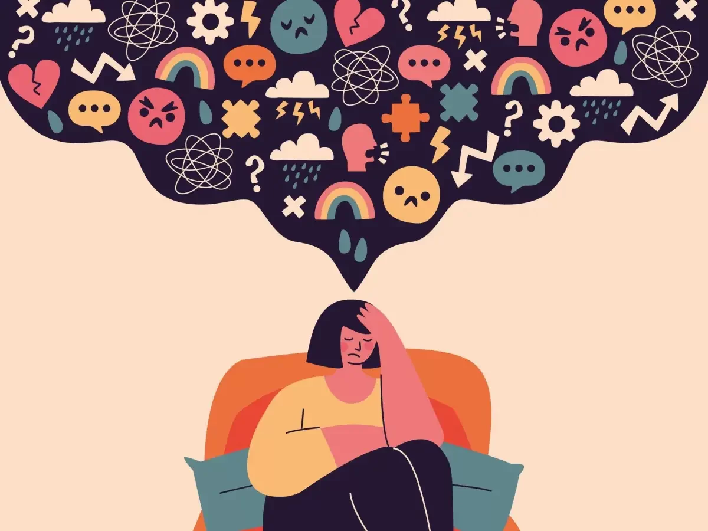

O que é Sedentarismo?
O sedentarismo é uma condição marcada pela ausência de atividade física suficiente para manter o bom funcionamento do corpo e da mente. Ele ocorre quando uma pessoa passa a maior parte do tempo realizando atividades que exigem pouco movimento, como trabalhar sentado, assistir televisão ou usar dispositivos eletrônicos. Esse estilo de vida tem se tornado cada vez mais comum, especialmente em ambientes urbanos, onde avanços tecnológicos e mudanças nas rotinas profissionais incentivam a inatividade física.
A falta de movimentação regular pode ter consequências graves para a saúde. O sedentarismo é um dos principais fatores de risco para doenças crônicas, como obesidade, diabetes tipo 2, hipertensão e problemas cardiovasculares. Além disso, ele pode afetar a postura, reduzir a força muscular e diminuir a flexibilidade, dificultando a realização de atividades diárias com eficiência. Do ponto de vista mental, a inatividade está associada a níveis mais elevados de estresse, ansiedade e até depressão, já que o corpo deixa de liberar substâncias químicas que promovem o bem-estar, como as endorfinas.
Segundo a Organização Mundial da Saúde (OMS), a inatividade física contribui significativamente para mortes evitáveis e é responsável por aumentar a carga global de doenças. A boa notícia é que essa condição pode ser revertida com a adoção de hábitos simples, como incluir caminhadas na rotina, praticar exercícios regulares e fazer pausas para alongamentos durante o dia. Pequenas mudanças no estilo de vida podem trazer grandes benefícios à saúde física e mental, reduzindo os riscos associados ao sedentarismo e promovendo uma vida mais longa e saudável.